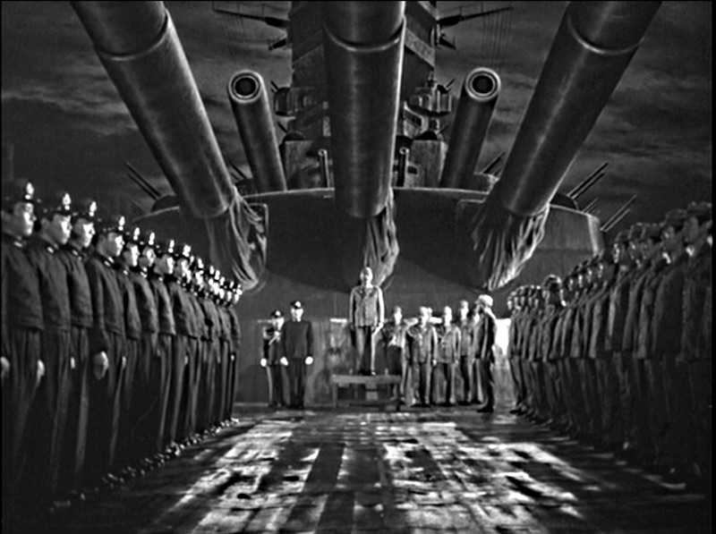
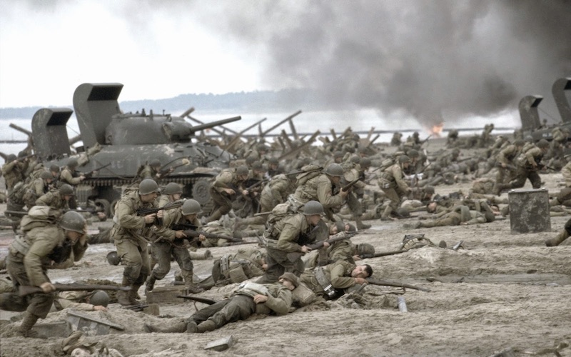
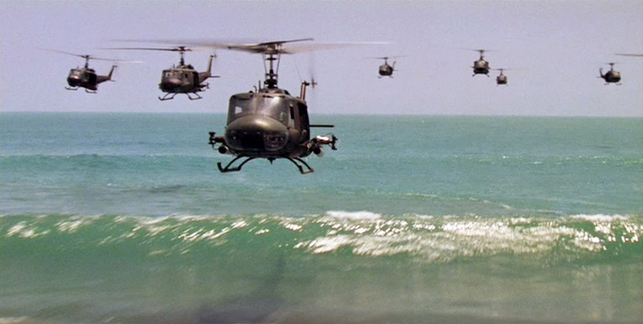
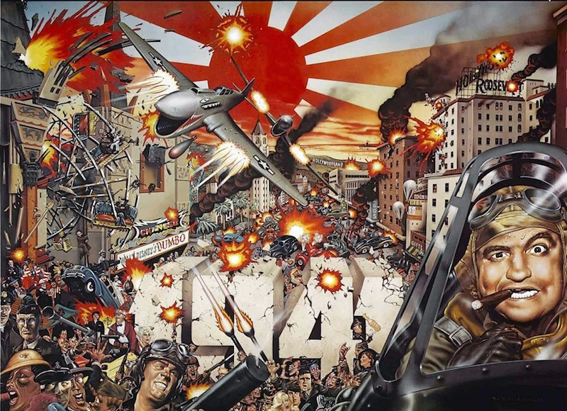
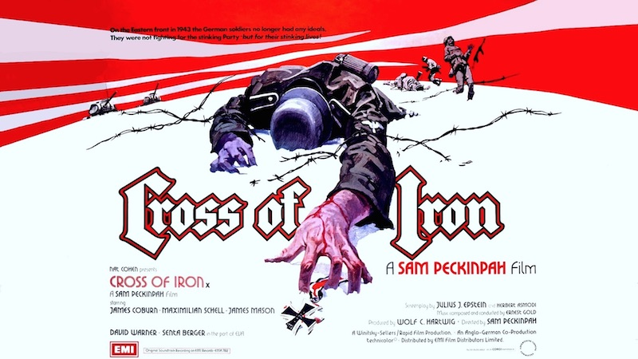

戦争(映画)だ〜い好き！
戦争は魅力的だ。
そこには美と魅力があるに違いない。
さもなければ人類はこんなにも始終戦争を繰り返しているはずはない。
戰艦大和

©国際放映
1953年/日本/104min
監督：阿部豊
脚本：八住利雄
原作：吉田満
音楽：芥川也寸志
撮影：横山実
出演：高田稔、小川虎之助、佐々木考丸、藤田進、見明凡太郎
大日本帝国海軍が建造した世界最大の超弩級戦艦大和の壮絶な最後を1945年の実際の沈没から僅か八年後に初映画化。戦争終結からまだ間もない時期に作られた本作のスタッフや俳優陣は実際の戦争経験者のため、フィルムから醸しだされる空気感は、現在の戦争映画がいくら予算をかけても再現できない本物のリアリズムだ。
プライベート･ライアンSaving Private Ryan


1998年/アメリカ/170min
監督：スティーブン･スピルバーグ
音楽：ジョン･ウィリアムズ
撮影：ヤヌス･カミンスキー
出演：トム･ハンクス、トム･サイズモア、エドワード･バーンズ、アダム･ゴールドバーグ、ヴィン･ディーゼル、ポール･ジアマッティ、マット･デイモン
第二次世界大戦の西部戦線、「ライアン二等兵を救出せよ」と命令を受けた1部隊は激しい戦闘に巻き込まれ次々と命を落とす。人間の価値を真っ向から否定するような激しい戦闘描写により戦争の不条理の映像化に成功した本作は戦争映画の歴史を変えた。オマハ・ビーチの凄絶な上陸シーンや、タイガー戦車との市街戦など爆音上映での見所満載。今回満を持して上映する。
地獄の黙示録 劇場公開版Apocalypse Now

©1979 Omni Zoetrope. All Rights Reserved.
1979年/アメリカ/147min
監督･脚本：フランシス･Ｆ･コッポラ
出演：マーロン･ブランド、マーティン･シーン、デニス･ホッパー、ロバート･デュヴァル
ベトナム戦争中に、米軍の命令を逸脱し自分の王国をジャングルに築いたカーツ大佐。彼の暗殺任務を命じられたウィラード大尉の地獄めぐりが始まる。ナパーム弾の爆撃と酩酊するウィラードをバックに流れるドアーズ「ジ・エンド」、ヘリコプター急襲シーンでのワーグナー「ワルキューレの騎行」など音楽と爆発音が尋常ではない迫力の爆音映画。
19411941

1979年/アメリカ/118min
監督：スティーヴン･スピルバーグ
出演：ダン･エイクロイド、ネッド･ビーティ、ジョン･ベルーシ、三船敏郎、クリストファー･リー、トリート･ウィリアムズ
大日本帝国海軍の真珠湾攻撃から6日後のカリフォルニアを舞台に、パニックになった住民たちのドタバタを常軌を逸した破壊のスペクタクルの連続で描いた本作は、若きスピルバーグだから可能だった荒技。この奇跡の映画を爆音上映で堪能しよう。日本軍潜水艦に同乗する三船敏郎とクリストファー・リーの共演シーンも必見。
炎628Idi i smotri

1985年/ソ連/143min
監督･脚本：エレム･クリモフ
原作･脚本：アレシ･アダモーヴィチ
出演：アリョーシャ･クラフチェンコ、オリガ･ミローノワ
ナチス・ドイツに侵略されたロシアを舞台に、パルチザンの少年の目を通して、ナチスによる暴虐を強烈に描く。神経をかきむしる効果音や不協和音が爆音上映で増幅される。独ソ戦の非情さをロシア側から描いた本作には、当時実際に家を焼かれた人々がエキストラとして出演している。
戦争のはらわた ドイツ語版Steiner: Das Eiserne Kreuz

1975年/西ドイツ･イギリス/133min
監督：サム･ペキンパー
出演：ジェームズ･コバーン、マクシミリアン･シェル、センタ･バーガー、デヴィッド･ワーナー
死者2500万人以上。人類史上最も残酷で凄惨な戦いと言われる第二次世界大戦の東部戦線「独ソ戦」のドイツの負けが確定した終盤を舞台に、普段は悪役としてしか描かれないドイツ軍側からの物語を巨匠ペキンパーが強烈なバイオレンス描写で描いた爆音上映向きの作品。雰囲気を重視したいので、あえてドイツ語吹き替え版での上映。